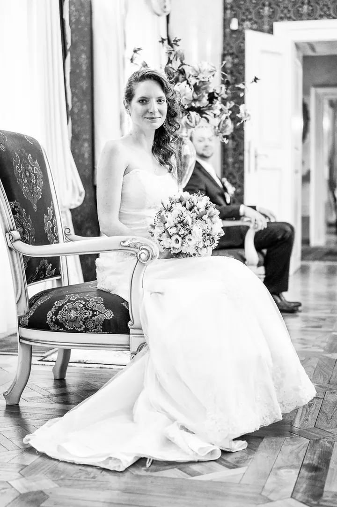
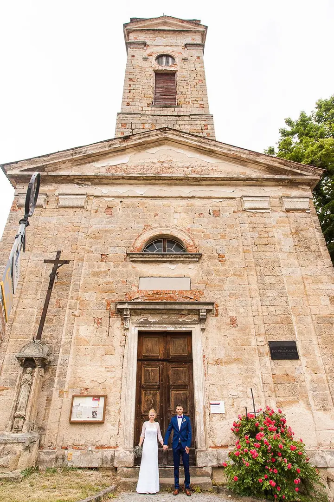
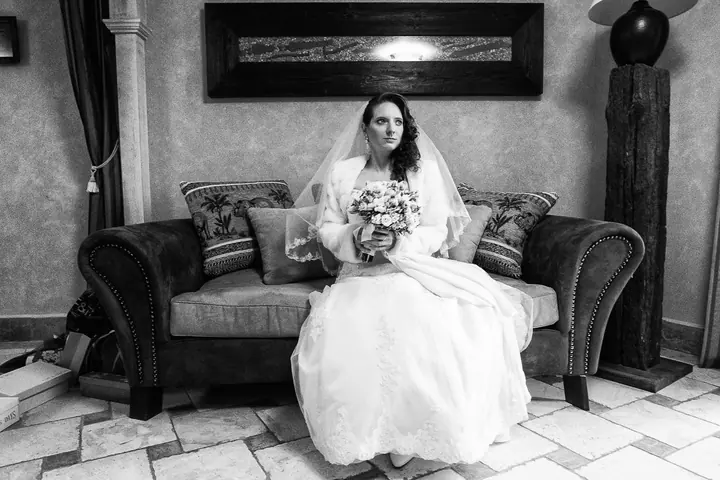
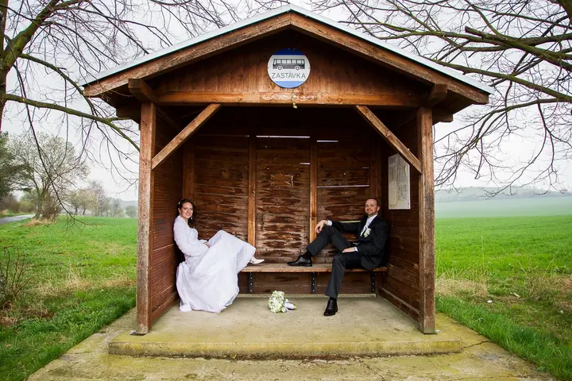

Svatební focení
Neřeším balíčky. Začnu fotit s prvními přípravami a skončím, až nebude co fotit, klidně ve dvě ráno.





Jmenuji se Michal Křenek a fotím svatby a páry, nejčastěji v Praze, na Šumavě nebo v Jizerských horách. Fotím lidské příběhy ne proto, že musím, ale protože chci. Snažím se zachytit svět takový, jaký je, v jeho kráse a přirozenosti.
Více o mně„Snažím se zachytit svět jaký je. V jeho kráse a přirozenosti.“
— Michal Křenek
Neřeším balíčky. Začnu fotit s prvními přípravami a skončím, až nebude co fotit, klidně ve dvě ráno.
Focení na první rande, výročí nebo oslavu narození potomka, které můžete darovat i jako poukaz. Fotíme aspoň 4 hodiny v Praze a do 100 km kolem, dostanete minimálně 20 fotek digitálně i vytištěných.
Kurz svatební fotografie přímo na opravdové svatbě, kde fotíte jako druhý fotograf, a individuální kurz sportovní fotografie. Nabízím i portfolio review osobně v Praze nebo online.
Sport je moje vášeň. Fotím ho stejně jako svatby, bez vyumělkované krásy, aby na fotkách byla atmosféra jako přímo na místě.
Každá svatba je jiná, a proto chci snoubence nejdřív poznat. Ptám se na detaily a když si nesedneme, radši řeknu ne. Ročně proto fotím jen omezený počet svateb. Nejsem Baťa, který to cvaká jako cvičky. Nejde mi o peníze, chci odevzdat dobrou práci.
Místo svatby si předem projdu sám, hledám zajímavá místa a dívám se, jak tam padá světlo. Někdy to znamená celý den chození a přes 100 km v autě. Ve svatební den pak nehlídám hodiny. Vy se máte bavit a fotografa vůbec neřešit.
Kromě svateb je mou velkou vášní sport. Rád fotím u nás, ale za zajímavým projektem sednu do auta i do letadla, občas fotím třeba v Portugalsku. Co jsem se naučil, předávám dál na kurzech pro fotografy.

Nejdřív se o vás a vaší svatbě dozvím co nejvíc. Pak si místo projdu sám, vyberu zajímavá zákoutí a zjistím, jaké tam bude světlo.
Termín vám zarezervuji ve chvíli, kdy se domluvíme, a už ho nepustím. Rezervační poplatek nechci, protože věřím, že slušnost nevymřela.
Fotit začnu s přípravami a skončím, až nebude co fotit, ať je to v deset, o půlnoci nebo ve dvě ráno. Vy si den užívejte.
Dostanete fotky, které vás vrátí do vašeho dne. Nejsou to jen svatební fotky, ale vzpomínky pro vás i vaše děti.
Žádné. Fotím celý den, od příprav až do chvíle, kdy už nebude co fotit, bez ohledu na to, kolik je hodin.
Ne. Termín vám rezervuji hned, jak se domluvíme, a bez poplatku. Když svatbu zrušíte, určitě k tomu máte důvod a já ho respektuji.
Rád. Často fotím na Šumavě, v Novohradských i Jizerských horách nebo na Sedlčansku a za zajímavým projektem sednu klidně i do letadla.
Ano, mám ho jako poukaz s platností 12 měsíců. Fotíme aspoň 4 hodiny v Praze a do 100 km kolem a dostanete minimálně 20 fotek digitálně i 20 vytištěných ve formátu 20 × 14 cm.